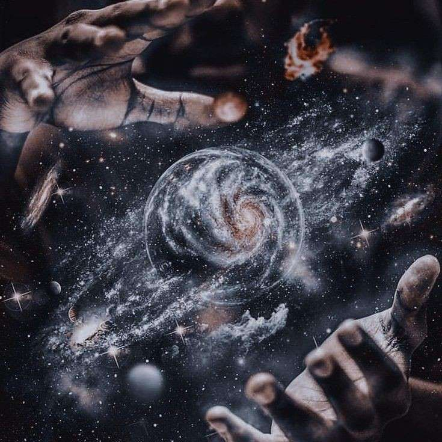

Seja bem vindo a Curse School!
Primeiro eu gostaria de apresentá-los o mundo em que estão
Há milênios o mundo surgiu, ninguém sabia como ou porque, ele apenas apareceu,conforme o tempo ia passando o mundo se tornou habitável para plantas e animais

Mas como toda história tem duas vertentes essa também tem, acredita-se que o mundo foi criado por criaturas extraordinárias e inexplicáveis e conforme a vida ia evoluindo crianças começaram a nascer com dons mágicos por todo mundo...mas os mortais tinham medo do desconhecido, assim, essas crianças eram vistas como amaldiçoadas e estavam fardadas a sofrer no mundo mortal

Depois de um longo tempo uma criança descobriu um novo mundo, um mundo onde apenas aqueles que tinham maldições poderiam habitar aquilo foi uma grande descoberta, com o tempo descobriram que suas maldições foram criadas por demônios 6 demônios juntos criaram 6 maldições,após descobrirem que os 6 não poderiam comandar juntos foi decidido separar os demônios, assim transformando essas 6 maldições em 6 clãs seus nomes eram:
Eve Elahor do clã ｡ﾟ☠️・Sobretoure
Mikkeal Zumph do clã ｡ﾟ👥・Modifiers
Vladimir Darkines do clã ｡ﾟ🍃・Naturalis
Ushan Ataz do clã ｡ﾟ💠・Runnes
Drower Sinus do clã ｡ﾟ🦋・Artemors
Asthares Thazram do clã ｡ﾟ🪄・Magicians
Depois de um tempo a Curse School foi criada e diversos alunos chegavam de todos os lugares do mundo e mesmo com a separação dos clãs a eventos especiais onde os demônios brigam para ter uma criança em seu clã, criando assim os ｡ﾟ🔮・Escolhidos

Visto que eram muitos alunos a magia no local se tornou forte o suficiente para fazer com que no centro da academia, no mesmo local onde fica o jardim, florescesse uma árvore junto a um cristal representando toda a magia do local e toda vez que um novo aluno chega ou quando uma criança desperta sua maldição um novo fruto é originado.